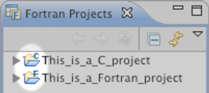

One of the advantages (or disadvantages) of using Photran is that it does
not
include a Fortran compiler. Instead, it uses
make
to compile Fortran programs. This allows you to use any Fortran compiler you want, but it also means that a Makefile must be written which tells the
make
program how to compile your Fortran program.
- For small, simple projects, Photran can
auto-generate
a Makefile which will use the GNU Fortran compiler (gfortran).
- For more complex projects, you can write a custom Makefile.
For more information on project types,
click on Help > Help Contents in Eclipse, and navigate to
C/C++ Development User Guide > Concepts > CDT Projects.
Starting a Project with an Auto-Generated Makefile
The following is a typical procedure for starting a new project using an auto-generated Makefile. Your system must have the GNU Fortran (gfortran) compiler installed for this procedure to work. To make sure that gfortran is installed, you can open a command prompt (Windows) or terminal window (Linux/Mac) and type "gfortran" (without the quotes); it should respond with "gfortran: no input files".
- Click File > New > Fortran Project
- Call it HelloFortran
- Choose "Executable (Gnu Fortran)" from the project type list
- Choose "GCC Toolchain" from the toolchain list (you may need to first uncheck the "Show project types..." check box at the bottom of the window before you can see this)
- Click Next
- Click on Advanced Settings
- Expand C/C++ Build in the list on the left, and click on Settings
- Click on the Binary Parsers tab. Check the appropriate parsers for your platform. If you are using Windows, check PE Windows Parser and/or Cygwin PE Parser; if you are using Linux, check Elf Parser; if you are using Mac, check Mach-O parser.
- Click on the Error Parsers tab. Check the error parser(s) for the Fortran compiler(s) you will use.
- Click OK
- Click Finish
- Click File > New > Source File
- Call it hello.f90; click Finish
- Type the standard "Hello, World" program shown below, and click File > Save.
- Open the Console view, and make sure "make" ran OK and compiled your program
- In the Fortran Projects view, expand the Binaries entry, and click on your executable (e.g., "HelloFortran.exe -
x86le")
- Run | Run As | Run Local Fortran Application
- Choose GDB Debugger (Cygwin GDB Debugger if you're under Windows)
- Check the Console view, and make sure "Hello World" appeared.
hello.f90:
program hello
print *, "Hello World"
end program
Starting a Project with a Hand-Written Makefile
The following is a typical procedure for starting a new project using a hand-written Makefile. The following example uses the GNU Fortran (gfortran) compiler, but any Fortran compiler can be used instead. We will assume that you are familiar with how to write a Makefile. If not, there are plenty of resources on the Web, including a tutorial from an introductory Computer Science course at UIUC
http://www-courses.cs.uiuc.edu/%7Ecs225/cs225/_resources/_tutorials/makeTut.pdf and another from the University of Hawaii
http://www.eng.hawaii.edu/Tutor/Make/... and, of course, you can always read the entire manual for GNU Make
http://www.gnu.org/software/make/manual/make.html.
- Click File > New > Fortran Project
- Call it HelloFortran
- Expand "Makefile project" in the project type list (it has a folder icon), and choose "Empty Project"
- Select "-- Other Toolchain --" in the toolchain list in the right-hand column, and click Next
- Click on Advanced Settings
- Expand C/C++ Build in the list on the left, and click on Settings
- Click on the Binary Parsers tab. Check the appropriate parsers for your platform. If you are using Windows, check PE Windows Parser and/or Cygwin PE Parser; if you are using Linux, check Elf Parser; if you are using Mac, check Mach-O parser.
- Click on the Error Parsers tab. Check the error parser(s) for the Fortran compiler(s) you will use.
- Click OK
- Click Finish
- Click File > New > Source File
- Call it hello.f90
- Click Finish
- Type the standard "Hello, World" program shown below.
- Click File > New > File
- Call it Makefile
- Click Finish
- Create a Makefile similar to the one shown below. Again, we assume you are familiar with the structure of a Makefile.
You cannot simply copy-and-paste this example
because the gfortran and rm lines must start with a tab, not spaces. The -g switch instructs gfortran to include debugging symbols in the generated executable so that it can be debugged later. The -o switch tells it what to name the generated executable.
- Click Project > Clean, then click OK
- Open the Console view, and make sure "make" ran OK and compiled your program
- In the Fortran Projects view, expand the Binaries entry, and click on your executable (e.g., "hello.exe -
x86le")
- Click Run > Run As > Local Fortran Application
- Choose GDB Debugger (Cygwin GDB Debugger if you're under Windows)
- Check the Console view, and make sure "Hello World" appeared.
hello.f90
program hello
print *, "Hello World"
end program
Makefile:
(You MUST replace the spaces beginning the gfortran and rm lines with a tab character!)
all:
gfortran -o hello.exe -g hello.f90
clean:
rm -f hello.exe
Converting C/C++ Projects to Fortran Projects
Every Fortran project is also a C project, so CDT's functionality will work as expected on Fortran projects. However, a C/C++ is
not
a Fortran project until it has been explicitly converted. (In the Fortran Projects view, a Fortran project will have an "F" icon, while a C/C++ project will have a "C" icon.)
To convert an existing C/C++ project to a Fortran project:
- Switch to the Fortran perspective.
- In the Fortran Projects view, right-click on the project you want to convert, and select Convert to Fortran Project from the pop-up menu.
- The project should now have an "F" icon in the Fortran Projects view.
